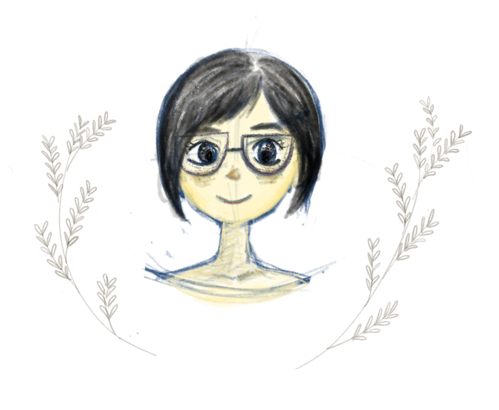

About Me
Hi,I'm Binli.I'm not good at photography, but I use the camera to record something inspiring to me and to help me create and draw. Actually, I like drawing. When I was a kid, I didn't have any friends, my parents were too busy to spend time with me. So I felt lonely. around that time I received my first birthday gift-colour pens from my parents. they said, "they could be my best friend". Yes, they were right. we became best friends and always played together. I used them to draw everything I saw. I felt less alone. after that I discovered painting which made me feel so happy, relaxed and free. Therefore, I want to be an illustrator, graphic designer and animator.
